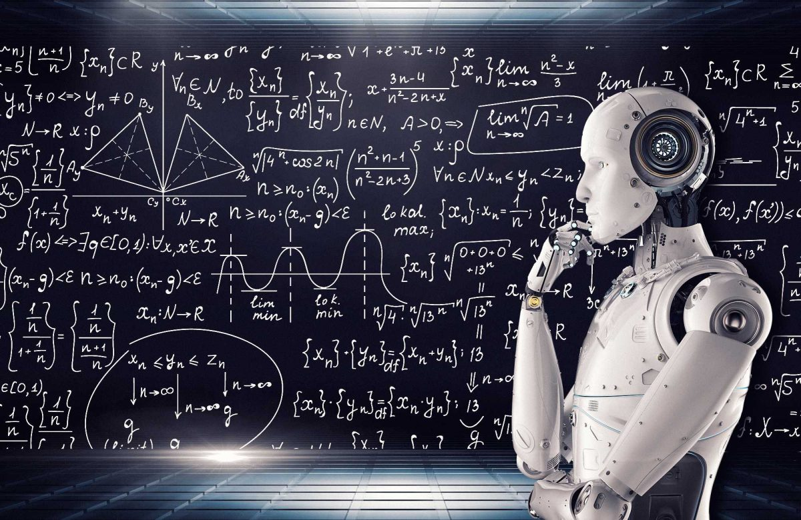

Capitolo 1
Vai al Indice
Vai alla Copertina
Vai al capitolo 2
Vai al capitolo 3
Vai al capitolo 4
Vai al capitolo 5
L'informatica
L’informatica, in fondo, è un modo per far fare alle macchine quello che vuoi tu. È un dialogo, anche se un po’ rigido, tra te e un oggetto che non capisce il linguaggio umano. Quindi tu devi tradurre i tuoi pensieri in una lingua che la macchina capisca. E lì entrano in gioco i linguaggi di programmazione, che sono come mezze lingue, mezze istruzioni. Non devi convincere il computer, devi solo essere preciso.
All’inizio l’informatica era solo calcolo. Gente che voleva fare conti veloci, automatizzare roba ripetitiva. Poi è cresciuta. Ha imparato a disegnare, a scrivere, a parlare, a immaginare. Tutto quello che si può descrivere con regole chiare, un computer può provare a farlo. A volte riesce anche dove le regole non sono così chiare. Tipo quando usi un’app che ti riconosce la faccia, o un assistente vocale che ti capisce anche se parli mezzo addormentato.
Però alla base resta sempre lo stesso concetto: input, elaborazione, output. Tu gli dai qualcosa, lui ci lavora, e poi ti ridà una risposta. La magia, se vogliamo chiamarla così, sta in cosa succede nel mezzo. E lì c’è di tutto: logica, memoria, matematica, ma anche creatività. Perché programmare non è solo roba tecnica. È anche saper trovare il modo giusto per dire le cose.
E forse è questo il punto più bello dell’informatica: ti costringe a pensare in modo chiaro, ordinato. Ti allena la mente, come un puzzle, ma uno di quelli dove puoi cambiare anche le regole se vuoi.
Hardware – la parte fisica del computer: CPU, RAM, hard disk, scheda madre, ecc. Software – i programmi e sistemi operativi che fanno funzionare l’hardware Algoritmi – sequenze di istruzioni logiche per risolvere problemi Programmazione – scrivere codice per creare software, usando linguaggi come Python, Java, C++ Basi di dati – organizzare, salvare e gestire grandi quantità di informazioni Reti – far comunicare più dispositivi tra loro (tipo Internet) Sicurezza informatica – proteggere dati e sistemi da accessi non autorizzati Intelligenza artificiale – far “ragionare” le macchine in modo simile all’uomo Informatica teorica – studiare i limiti e le possibilità dei calcoli e delle macchine Interfacce utente – rendere l'interazione tra uomo e macchina più semplice e intuitiva
La storia
La storia dell’informatica non comincia con i computer come li conosciamo oggi, ma ha radici molto più lontane nel tempo. Già nell’antichità, gli esseri umani cercavano strumenti per semplificare i calcoli: uno dei primi fu l’abaco, utilizzato da civiltà come quella babilonese e cinese. Era uno strumento semplice ma efficace per eseguire operazioni matematiche di base.
Nel Seicento, la ricerca di metodi per automatizzare i calcoli portò alla creazione delle prime macchine meccaniche. Blaise Pascal inventò una macchina per sommare e sottrarre, seguita da Leibniz, che ne progettò una capace di moltiplicare e dividere. Erano ancora oggetti rudimentali, ma segnavano l’inizio dell’idea di “calcolo automatico”.
Un vero salto concettuale si ebbe nell’Ottocento con Charles Babbage, che immaginò la cosiddetta “macchina analitica”, una macchina completamente programmabile, in grado di svolgere operazioni complesse seguendo istruzioni. Anche se non fu mai completata, il suo progetto è considerato l’antenato teorico dei computer moderni. Fondamentale fu anche il contributo di Ada Lovelace, che scrisse un algoritmo per la macchina di Babbage, diventando così la prima programmatrice della storia. Capì che queste macchine non erano solo per i numeri, ma potevano manipolare qualsiasi tipo di informazione.
Nel Novecento, e in particolare durante la Seconda Guerra Mondiale, l’informatica assunse un ruolo cruciale. Macchine come il Colossus furono usate per decifrare messaggi nemici, mentre Alan Turing, genio britannico, contribuì non solo alla sconfitta del nazismo decifrando Enigma, ma anche allo sviluppo teorico del concetto di macchina universale, la base della moderna informatica teorica.
Dopo la guerra, nel 1946, nacque l’ENIAC, considerato il primo computer elettronico a uso generale. Era enorme, pieno di valvole, e consumava moltissima energia, ma rappresentava un punto di svolta: da quel momento si cominciò a pensare ai computer come strumenti con potenzialità infinite.
Negli anni ’50 e ’60 l’informatica si sviluppò soprattutto in ambito scientifico e aziendale, grazie anche ai primi linguaggi di programmazione come FORTRAN e COBOL, che permisero di scrivere istruzioni in modo più comprensibile per gli esseri umani. Con l’invenzione del transistor, e poi dei circuiti integrati, i computer divennero sempre più piccoli, potenti e accessibili.
Negli anni ’70 e ’80 nacquero le grandi aziende che ancora oggi dominano il settore: IBM, Microsoft, Apple. Fu proprio in questo periodo che i computer iniziarono a entrare nelle case e negli uffici, con modelli come l’Apple II e l’IBM PC. L’informatica smise di essere solo per scienziati: divenne personale.
Con gli anni ’90 arrivò Internet, e tutto cambiò. Collegarsi al mondo, inviare email, creare siti web: la comunicazione e l’informazione si spostarono online, dando vita a una nuova era. L’informatica non era più solo uno strumento di calcolo, ma diventava parte integrante della vita sociale, lavorativa e culturale.
Nel nuovo millennio, lo sviluppo di smartphone, cloud computing, intelligenza artificiale, social network e app ha rivoluzionato completamente il nostro modo di vivere. L’informatica è diventata invisibile, ma onnipresente: è nei nostri telefoni, nelle auto, nei frigoriferi, nelle cuffie, negli assistenti vocali.
E oggi non ci fermiamo. Il futuro parla di robot autonomi, realtà aumentata, sistemi intelligenti, algoritmi che imparano da soli. Ma insieme a queste meraviglie tecnologiche, emergono nuove sfide: la privacy, l’etica dell’intelligenza artificiale, la sostenibilità digitale.
La storia dell’informatica è quindi una lunga avventura, fatta di invenzioni geniali, di intuizioni visionarie, di tentativi e fallimenti, ma soprattutto di un desiderio profondo: quello di potenziare la mente umana e superare i suoi limiti, con l’aiuto delle macchine.
La storia dell’informatica inizia ben prima dell’invenzione dei computer moderni, con strumenti meccanici come l’abaco e dispositivi progettati per facilitare i calcoli fin dall’antichità. Nel Seicento, matematici come Blaise Pascal e Gottfried Wilhelm Leibniz crearono le prime macchine da calcolo meccaniche, capaci di eseguire operazioni aritmetiche in modo automatico. Nell’Ottocento, Charles Babbage progettò la “macchina analitica”, considerata il primo vero concetto di computer programmabile, anche se non fu mai costruita completamente durante la sua vita. Ada Lovelace, collaboratrice di Babbage, scrisse il primo algoritmo destinato a una macchina, ed è oggi riconosciuta come la prima programmatrice della storia. Durante la Seconda Guerra Mondiale, l’informatica fece un grande balzo in avanti con la costruzione delle prime macchine elettroniche per decifrare codici, come il Colossus britannico e la celebre Enigma tedesca, decifrata da Alan Turing. Alan Turing non solo contribuì alla vittoria degli Alleati, ma pose anche le basi teoriche dell’informatica moderna, introducendo il concetto di “macchina di Turing”, ancora oggi fondamentale nella logica computazionale. Nel 1946 venne costruito l’ENIAC, il primo computer elettronico general purpose, grande quanto una stanza intera, che però già mostrava il potenziale di questa nuova tecnologia. Negli anni ’50 e ’60 nacquero i primi linguaggi di programmazione, come FORTRAN e COBOL, che resero possibile lo sviluppo di software sempre più complessi e accessibili. Con l’invenzione del transistor e poi del microchip, i computer divennero sempre più piccoli, potenti ed economici, aprendo la strada all’informatica personale negli anni ’70 e ’80. In questo periodo aziende come IBM, Microsoft e Apple rivoluzionarono il mercato con i primi personal computer, rendendo l’informatica parte della vita quotidiana di milioni di persone. Negli anni ’90, con la diffusione di Internet, l’informatica subì un’altra trasformazione epocale, permettendo la connessione globale e la nascita del web come lo conosciamo oggi. L’inizio del nuovo millennio ha visto l’esplosione dei dispositivi mobili, delle app, del cloud computing e dei social network, che hanno trasformato radicalmente il modo in cui lavoriamo, comunichiamo e ci informiamo. Negli ultimi anni, l’intelligenza artificiale, i big data, la realtà virtuale e la blockchain rappresentano le nuove frontiere dell’informatica, spingendo ancora più in là i confini di ciò che è possibile fare con la tecnologia. La storia dell’informatica è una storia fatta di idee rivoluzionarie, di intuizioni geniali e di persone che hanno immaginato un futuro diverso, spesso partendo da sogni scritti su carta, o da circuiti saldati in un garage.

La scienza dell'informatica
L’informatica, a prima vista, potrebbe sembrare solo una questione di computer, codici e tecnologia, ma in realtà è molto di più. È una scienza che ha cambiato profondamente il nostro modo di vivere, pensare e comunicare. Non è solo lo studio dei programmi o delle macchine, ma è qualcosa che tocca anche la logica, la matematica, la filosofia e persino la creatività. Tutto parte da una semplice domanda: come possiamo far fare a una macchina qualcosa che normalmente faremmo noi? Da lì si sviluppano concetti fondamentali come quello di algoritmo, che è una sequenza di istruzioni da seguire per risolvere un problema. È un po’ come una ricetta: hai una serie di passaggi precisi per arrivare a un risultato, e devi essere chiaro e ordinato, altrimenti il “piatto” finale non viene bene.
Quello che trovo affascinante dell’informatica è che non si ferma alla teoria. È ovunque, anche dove non te lo aspetti. È nei social, nei videogiochi, nelle app di messaggistica, nei film che guardiamo in streaming e perfino nei semafori che regolano il traffico. Ogni volta che usiamo uno smartphone o apriamo un sito, dietro le quinte ci sono migliaia di operazioni che un computer sta facendo per noi in una frazione di secondo. Tutto questo è possibile grazie a programmi scritti da persone, a linguaggi informatici precisi e a una quantità enorme di logica e intelligenza.
Ma l’informatica non si ferma solo al lato pratico. Negli ultimi anni, con l’arrivo dell’intelligenza artificiale e del machine learning, le macchine hanno iniziato a imparare da sole, a riconoscere immagini, a parlare e rispondere come esseri umani, e persino a prendere decisioni. A volte è entusiasmante, altre volte un po’ inquietante. Viene spontaneo chiedersi fino a che punto possiamo spingerci, e se queste tecnologie possono anche influenzare la nostra libertà, il modo in cui pensiamo o ci relazioniamo con gli altri. È qui che l’informatica diventa anche un tema etico, non solo scientifico. Non basta più sapere come funziona un algoritmo, bisogna anche capire se è giusto usarlo in un certo modo, se discrimina, se rispetta la privacy, se condiziona il nostro comportamento.
Un’altra cosa che mi colpisce molto è quanto l’informatica sia legata alla creatività. Tante persone pensano che sia solo una materia “fredda”, fatta di numeri e logica, ma in realtà programmare è un atto creativo. È come costruire qualcosa dal nulla, dare vita a un’idea usando solo la propria mente e un po’ di codice. Puoi scrivere un videogioco, un’app che risolve un problema, un sito che racconta una storia. Serve immaginazione, ma anche capacità di analisi, pazienza e un certo spirito da “risolutore di problemi”.
Infine, credo che conoscere l’informatica oggi sia quasi obbligatorio. Non tanto perché tutti debbano diventare programmatori, ma perché viviamo in un mondo sempre più digitale e interconnesso. Capire come funziona il mondo digitale è come saper leggere o scrivere: ti dà strumenti per orientarti, per difenderti, ma anche per creare qualcosa di utile e magari fare la differenza. L’informatica ci offre mille possibilità, ma sta a noi decidere come usarle.
In fondo, per me, la scienza dell’informatica non è solo una materia scolastica o un campo di lavoro. È una chiave per capire il presente e immaginare il futuro.
La scienza dell’informatica studia i principi fondamentali che regolano l’elaborazione automatica delle informazioni, andando ben oltre il semplice utilizzo dei computer. È una disciplina interdisciplinare che coinvolge matematica, logica, linguistica, ingegneria e filosofia, e che ha un impatto enorme sulla società moderna. Al centro dell’informatica c’è il concetto di algoritmo, una sequenza finita e ordinata di istruzioni che consente di risolvere un problema o svolgere un compito.
Gli algoritmi sono la base di ogni attività informatica: li troviamo nei motori di ricerca, nei social network, nella crittografia, nella diagnostica medica e in mille altri ambiti quotidiani. L’informatica si occupa anche della rappresentazione delle informazioni: tutto ciò che i computer elaborano – testi, immagini, suoni – viene convertito in codice binario. I linguaggi di programmazione sono strumenti fondamentali per comunicare con i computer: ognuno ha caratteristiche specifiche in base al tipo di compito che deve svolgere.
Con l’avvento dell’intelligenza artificiale e del machine learning, l’informatica si è estesa anche a campi come l’apprendimento automatico, l’elaborazione del linguaggio naturale e il riconoscimento visivo. Le tecnologie informatiche hanno reso possibile lo sviluppo di sistemi che “pensano”, imparano dai dati e prendono decisioni autonome, modificando il nostro rapporto con la tecnologia. Questo progresso pone anche questioni etiche importanti, legate alla privacy, alla sorveglianza, alla disinformazione e all’impatto sociale degli algoritmi. La conoscenza dell’informatica non è utile solo per programmare, ma anche per capire e gestire il mondo digitale in cui viviamo ogni giorno. L’informatica richiede logica e rigore, ma è anche una disciplina creativa, che stimola l’immaginazione e il problem solving per costruire soluzioni innovative.
Essere alfabetizzati digitalmente significa sapere usare la tecnologia in modo consapevole, critico e responsabile, partecipando attivamente alla società dell’informazione.
In definitiva, la scienza dell’informatica è una delle chiavi principali per comprendere il presente e progettare il futuro in modo intelligente, etico e sostenibile.
Comportamento in rete
Navigare in rete è diventato parte della nostra vita quotidiana, quasi senza che ce ne accorgessimo. Passiamo ore connessi: studiamo, lavoriamo, chiacchieriamo con gli amici, guardiamo video, leggiamo notizie, condividiamo foto, e a volte semplicemente scorriamo contenuti senza un vero scopo. Ma fermarsi un attimo a riflettere su come ci comportiamo online è importante, perché anche se siamo dietro uno schermo, le azioni che compiamo nella rete hanno conseguenze reali, su di noi e sugli altri.
Spesso sul web ci sentiamo più liberi, più coraggiosi, a volte anche troppo. È facile scrivere qualcosa di impulsivo o poco rispettoso quando non si è faccia a faccia con qualcuno. I social, in particolare, sembrano dare l’illusione di essere in una piazza pubblica dove tutto è concesso, ma in realtà ogni post, ogni commento, ogni like costruisce un pezzetto della nostra identità digitale. E, soprattutto, può influenzare gli altri. Ci dimentichiamo che dall’altra parte dello schermo ci sono persone vere, con sentimenti, storie, fragilità.
C’è poi un altro aspetto: la tendenza a voler apparire. Online spesso mostriamo solo la parte migliore di noi stessi, quella più felice, più interessante, più curata. Ma questa “versione ideale” può diventare una gabbia, e può portare altri – magari chi è più insicuro o fragile – a sentirsi sbagliati, fuori posto, mai abbastanza. Ecco perché essere autentici, mostrare anche le proprie vulnerabilità, ha un valore enorme: crea empatia, connessione vera, non solo digitale.
Un comportamento consapevole in rete significa anche fare attenzione a ciò che si condivide. Le fake news, le catene di disinformazione, gli insulti camuffati da opinioni, sono ovunque. Spesso condividiamo contenuti senza verificarli, magari in buona fede, ma contribuiamo a creare confusione, paura o odio. Essere cittadini digitali responsabili vuol dire informarsi da fonti affidabili, ragionare prima di cliccare su “condividi”, rispettare le idee altrui anche se non le condividiamo.
Poi c’è il lato più personale: come la rete influenza noi stessi. Stare troppo tempo online può farci perdere il contatto con la realtà, con il corpo, con il tempo. Può aumentare ansia, senso di inadeguatezza, e a volte persino solitudine. Paradossalmente, in un mondo connesso, ci si può sentire più isolati che mai. Ecco perché è fondamentale darsi dei limiti, prendersi delle pause, ricordarsi che c’è vita anche – e soprattutto – fuori dallo schermo.
Infine, credo che ognuno di noi, nel suo piccolo, possa contribuire a rendere la rete un posto migliore. Basta poco: un commento gentile, una parola di supporto, un contenuto utile condiviso, una segnalazione contro un abuso. Il web non è un mondo a parte: è uno specchio della società che stiamo costruendo, e il modo in cui ci comportiamo online dice molto di chi siamo davvero.
Il comportamento online ha un impatto reale, anche se avviene dietro uno schermo: le parole scritte e i contenuti condivisi possono influenzare profondamente le persone. Sui social si tende a sentirsi più liberi o protetti, ma questa libertà può trasformarsi in mancanza di rispetto o impulsività, portando a comportamenti poco empatici o offensivi. Ogni azione online contribuisce a costruire la nostra identità digitale: è importante essere consapevoli che ciò che pubblichiamo ci rappresenta.
Molti utenti mostrano solo il lato positivo della propria vita online, alimentando confronti poco realistici che possono creare insicurezze e malessere negli altri. Essere autentici in rete, mostrando anche fragilità e momenti difficili, aiuta a creare relazioni digitali più vere e umane. È fondamentale prestare attenzione a ciò che si condivide, evitando la diffusione di notizie false, contenuti fuorvianti o messaggi d’odio. Un comportamento digitale responsabile include la verifica delle fonti, il rispetto delle opinioni altrui e la riflessione prima di commentare o condividere qualcosa. Stare troppo tempo online può influire negativamente sul benessere mentale e fisico, causando ansia, isolamento o perdita di contatto con la realtà.
Imparare a gestire il proprio tempo online è essenziale per mantenere un equilibrio tra vita digitale e vita reale.
Ognuno di noi può contribuire a rendere la rete un posto più positivo con piccoli gesti: un commento gentile, una parola di supporto, o la denuncia di contenuti inappropriati.
Il web non è un mondo a parte: riflette la società che stiamo costruendo, e il nostro comportamento online rivela molto del nostro modo di essere nella vita reale.